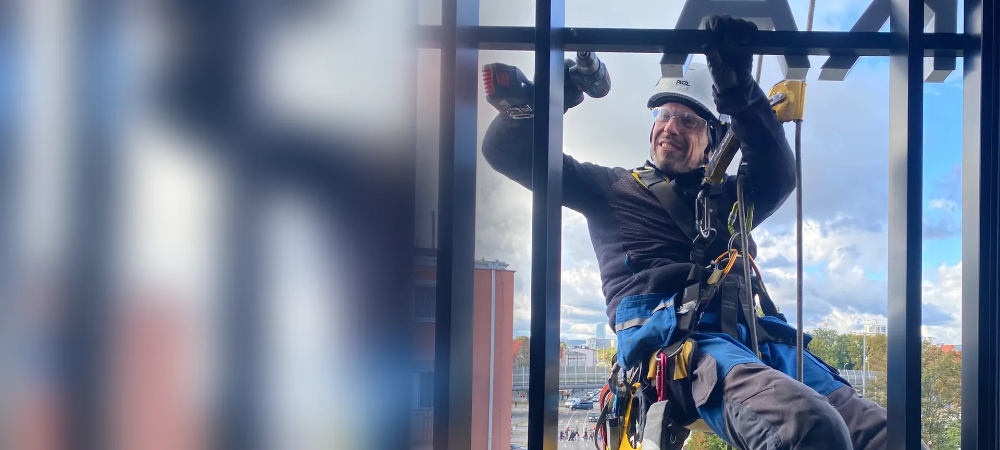
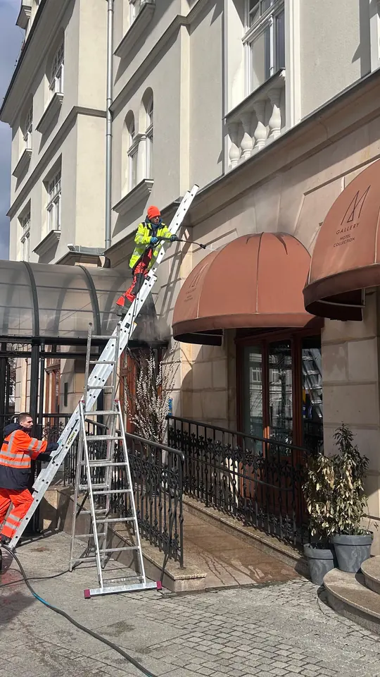

Biurowce
Budynki z fasadami szklanymi i elewacjami wentylowanymi.
- mycie fasad szklanych
- mycie okien na wysokości
- konserwacja elewacji
- uszczelnianie przeszkleń

Obsługujemy biurowce, hotele, galerie, lokale i obiekty usługowe w Trójmieście. Myjemy fasady szklane, montujemy reklamy i oznakowania, konserwujemy elewacje i dachy. Bez rusztowań i bez przerywania pracy najemców.
Najemcy, klienci i wizerunek budynku. Tak rozwiązujemy trzy typowe sytuacje.
Najczęstsze prace, które wykonujemy dla obiektów komercyjnych w Trójmieście.
Budynki z fasadami szklanymi i elewacjami wentylowanymi.
Szyldy, napisy i reklamy na elewacjach i dachach.
Galerie, hotele, sklepy i restauracje.
Serwis dachów i urządzeń na dachach budynków.
Pracujemy dla biurowców, hoteli i lokali w całym Trójmieście.
Biurowce w Śródmieściu i Redłowie, obiekty portowe i usługowe. Tu mamy bazę.
Śródmieście · Redłowo · Orłowo · Chylonia
Biurowce w Oliwie i na Przymorzu, galerie i hotele w Śródmieściu.
Oliwa · Przymorze · Wrzeszcz · Śródmieście · Letnica
Hotele, apartamentowce i lokale w centrum miasta.
Dolny Sopot · Monte Cassino · Karlikowo
Hale i magazyny: obiekty logistyczne i produkcyjne obsługujemy w ramach prac na wysokości w halach i magazynach.



Dla biurowców i obiektów usługowych ustalamy harmonogram mycia przeszkleń i przeglądów. Po każdej wizycie dostajesz protokół ze zdjęciami, gotowy dla właściciela lub najemców.
Zwykle 2–4 razy w roku, zależnie od lokalizacji i zabrudzenia. Budynki przy ruchliwych ulicach i blisko morza wymagają częstszego mycia. Harmonogram ustalamy w umowie serwisowej.
Nie musi. Pracujemy w wydzielonej strefie, bez rusztowań, a godziny prac ustalamy z zarządcą budynku. Biura, sklepy i wejścia działają normalnie.
Tak. Montujemy, serwisujemy i demontujemy szyldy, napisy, podświetlane litery, banery i siatki reklamowe. Pracujemy bezpośrednio dla właściciela budynku albo jako podwykonawca firmy reklamowej.
Podnośnik potrzebuje miejsca na chodniku lub parkingu i często nie sięga wyższych kondygnacji. Na linach docieramy do każdego miejsca elewacji, a przygotowanie stanowiska trwa krótko.
Tak. Do każdego zlecenia wystawiamy fakturę VAT, a po pracach przekazujemy protokół ze zdjęciami przed i po. Każde zlecenie jest objęte polisą OC.
Tak. Myjemy przeszklenia i elewacje hoteli, montujemy dekoracje i oznakowania w galeriach oraz serwisujemy dachy obiektów handlowych. Prace planujemy tak, aby nie przeszkadzały gościom i klientom.
Wyślij zdjęcia i adres budynku. Przygotujemy bezpłatną wycenę albo propozycję umowy serwisowej, zwykle tego samego dnia roboczego.